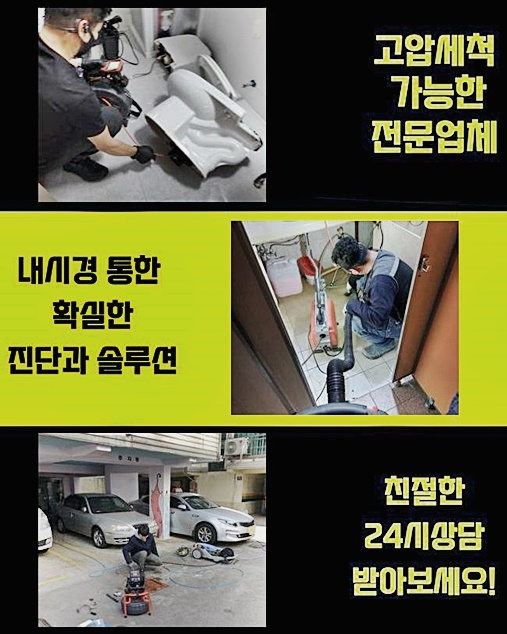
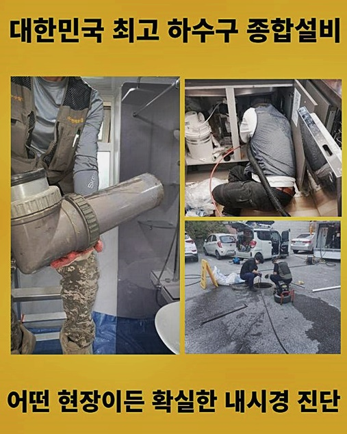
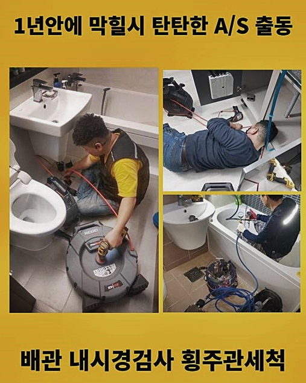
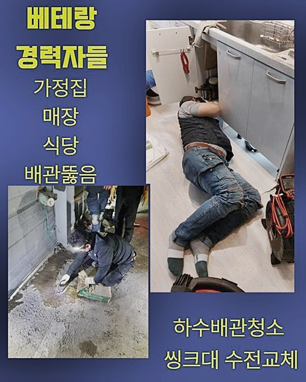
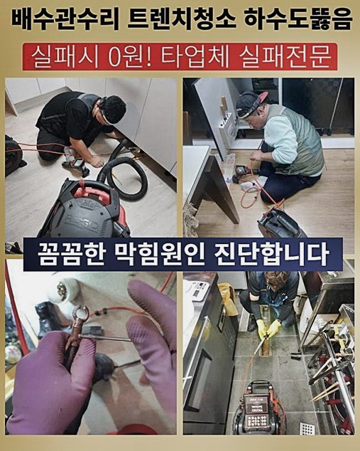
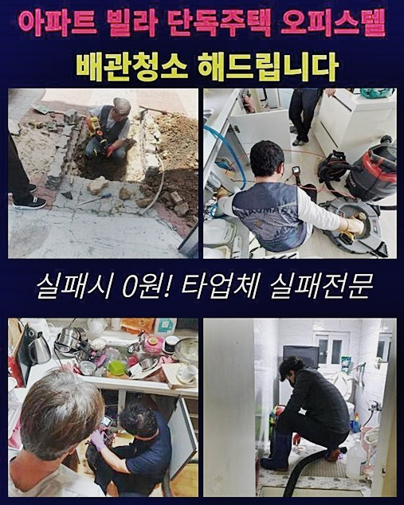

🏠 연수구 선학동씽크대뚫음 동춘동 배관뚫기 설비출장
용인 싱크대막힘 전문 시공 후기

📋 작업 개요
- 위치: 용인
- 서비스 유형: 싱크대막힘, 하수구막힘, 배관막힘, 누수수리, 뚫는업체, 배관청소, 고압세척, 설비공사, 배관보수
- 작업 일시: 2024. 8. 1. 9:23
- 업체명: 하수구수사대 (010-5615-2118)
🔍 문제 상황
연수구 선학동씽크대뚫음 동춘동 배관뚫기 설비출장
우리가 활동하는 공간에서도 하수의 활용량이 뛰어난 화장실이나 주방시설에서는 수도가 단수되는 상황도 일상을 마비시키겠지만 다 쓰고난 수돗물의 통수가 제한이 걸리는 것 역시 씻고 먹는 기본 행위에 큰 방해 요인이 되는 심각한 상황일 것입니다
오늘 선보여드릴 장소는 하수구들이 일시에 막힌데다 밖으로 범람하는 현상까지 시설 내의 많은 곳에서 벌어져서 난리가 따로없다 고 저희측에 뚫는 작업이 필요하겠다 의사를 밝히셨어요
다수의 호실에서 난감함을 안고 있는 만큼 빠르게 개선시켜달라고 간곡히 요청하셨던 곳이었기에 스케줄을 당겨서 일찍이 방문드리기로 약속드리고 여러 장치들을 빠짐없이 갖춰서 곤란을 겪는 건물로 자리를 옮기게 되었습니다
이번 현장처럼 굵은 핵심 하수관이 막혀버린다면 고압수가 적용되어야 하는 경우가 빈번하기 때문에 출장에 나서기 전에 고압수를 발포하는 도구도 빠지지 않고 챙겨갔어요
갈피를 못잡을 정도로 수많은 업체가 홍보 중이었지만 지인이 권장하신 저희들에게 요청을 해주신 부분이었어요
사건과 관련되어 있는 대화를 몇 마디 나누고 조치 방안을 설립할 수 있도록 검토부터 순차적으로 실시해 보았습니다!
한 세대를 넘어 여러 곳에서 일괄적으로 손해를 입고 자잘한 가지 배관이 아니라 메인 하수구가 막혀버린 곳이라면 심플한 기계작업으로는 어렵습니다
그 예로는 흡입을 하는 석션 장비나 경화된 석회를 깨주는 샤프트와 같은 기기만 구동시켜서 라이트하게 조치하는 건 많이 부족할 수 있어요

🔎 원인 분석
💡 전문가 진단: 정밀 진단 장비를 사용하여 슬러지의 고착 여부를 판명하고 타격/세척 작업을 실시했습니다.
더욱 강한 성능의 기계로 오류가 생겨버린 하수도를 손 보는 것이 명쾌한 방편이 되어줄 것입니다
우선 벽체 점검구부터 접근하여 중앙 관로를 살펴보는 과정을 거쳤어요
이런 일은 난생 처음이라 하시며 몇날 며칠 걸리고 과한 공사비가 책정되는 점은 아니었으면 한다며 고객님께서 불안한 표정으로 우려하셨던 게 기억납니다
얼마나 손상됐는지 세부적으로 분석한 후에 안내가 되긴 하는데 늦은 시간대에 진입하기 전에 수긍이 충분히 될만한 비용 선으로 조치를 해드리겠다고 장담을 드리면서 궁금증을 해소하실 수 있게 어떠한 수단으로 공정을 진행하게 될지에 대해서 설명도 덧붙여 드렸습니다
어둡고 기다란 배수관은 시공을 성공적으로 마쳐온 일화를 갖춘 사람이라도 겉에서 내부를 들여다 보기는 분명한 한계점이 있기 때문에 좁은 관로에도 쑥 들어가서 실시간으로 살필 수 있는 배관 용도의 카메라 장치가 어두운 통로를 밝혀줘야 해요
어떤 오물이 생겨서 막힘이 일어나게 되었고 어떤 지대까지 더러워져 있는지 디테일하게 감지하기 위해 진단 기기를 작동시킨 후 안으로 깊이 밀어넣었어요
상당하게 심층부까지 내시경 기기를 배정하여 실제 모습을 세세하게 비춰보았는데 중앙 배관에 도달하니까 고착화된 오염물 덩어리와 기름기가 좔좔 흐르는 때들로 터질 듯 차서 물길을 떡하니 차지하고 있었습니다
숨 구멍도 없이 메워진 상태임을 전달드렸더니 경악을 금치 못하시며 보기만 해도 답답해지는 크기의 대상이 방해하고 있다는 점은 상상도 못하셨다고 하셨어요
이렇게 심화된 상태였으니 자연히 막힐 수 밖엔 없었겠다 하셨고 중책을 담당하는 설비인데 관리를 외면해온 것 같다며 솔직한 속내를 이야기 해주셨어요

🔧 작업 과정
저희에게 맡기고 편안하게 대기해 주시기로 결정하셨고 근처에 튈 수 있는 시설물들에 비닐을 빈틈 없이 부착하여 야무지게 보호를 해줬습니다!
보호막을 형성하지 않으면 뚫는 활동을 하면서 비위생적인 파편이 분산되어 썩은 듯한 냄새를 묻힐 수 있기 때문에 이러한 불상사가 없도록 이러한 측면들도 구제책을 마련하면 도움이 됩니다
보편적인 배수로들은 긴 원통형이기 때문에 관로의 중앙부 부근까지도 세정을 들어가야 하겠다는 결단을 내린 다음에는 센서 장비를 구동시켜서 하수관이 이어진 형상을 분석하는 단계도 시행해서 도움을 받았습니다
중앙배관은 갈라지는 형태로 자잘한 가지 배관으로 배분이 되는 구조인데 하나의 파이프만 물길을 확보한다 하더라도 다른 쪽 측면에서 증상이 더 심화되기도 한답니다
보완을 들어가야만 하는 영역들을 모조리 적어두고 일일이 뚫어줘야 하는 과정을 거쳐야 완수할 수 있습니다
배관의 컨디션과 모양에 대한 이해를 든든하게 정립해 뒀다면 양 끝쪽에서 강한 압력의 물을 분사하는 고압수 세척 작업을 착수하게 되었는데요
기기에서 나가는 센 물살을 쏴서 이물질을 분해해 주는 단계로 더러운 이물질이 종적을 감출 때 까지 꾸준하게 내부 정돈을 해줘야 한답니다!
이물질의 양에 따라서 시간의 변동은 있을 수 있지만 완성도를 높이려면 시간을 꽤 투자해야 합니다
세기를 조절하는 것도 한끗차이로 퀄리티가 달라지는데 만일 세월을 오래 감당한 배관일 경우에는 손상을 막심하게 감당해야할 수 있습니다
오래된 건물이었음에도 불구하고 배수로에 대한 정화 작업을 전혀 받아본 적이 없기에 시간이 더 소요됐는데 카메라로 찍어서 본 하수구의 내부 모습은 집채만한 크기로 집합된 노폐물들이 자리하고 있음을 알게 되었습니다
작업 중에도 카메라를 소임을 다했다고 끄는 것이 아니라 파이프라인에 자극이 가지 않는지와 노폐물이 청소된 퍼센트를 체크하면서 청소를 진척시키기 때문에 세척의 과정 중에서 배관이 이상해지거나 전체 교환 공사를 해야만 하는 일이 발생하는 것은 아닌지 우려는 넣어두셔도 됩니다
장시간 청결에만 집중하면서 물길을 확보해 나간 덕에 180도 변모하게 된 배수관 환경을 정비하게 됐고 주변정돈을 하고 마무리를 했네요
옆에서 보셨던 의뢰인분도 시원하게 변화한 하수도를 보시곤 오랜시간 매달려 주시고 시설을 쾌적하게 만들어 주셔서 만족 그 자체라고 엄지를 들어주셨네요!
기능을 확인하기 위해서 하수관으로 물이 잘 내려가나 검사해보고 스피드있게 물이 내려가나 진단을 해보고 나서 다른 이상 징후는 없는지 가늠해 보았더니 건물 여기저기에 물 웅덩이가 고여있는 등 누수증세의 낌새가 뜻밖에 감지되어서 건물의 안정성을 위해 누수공사가 필요하다고 말씀해드리고 점검까지 진행했습니다


✅ 작업 완료
세부 진단 결과 설치되어있던 하수구의 겉면에서 바로 감지될 수준으로 갈라져버린 공금이 가있는 형상을 보게 됐고 여기도 급히 손봐줘야만 하는 상태로 보였습니다
곧이어 작업하기엔 메인 관로가 고장난 고로 고압세척을 장기간 실시했었기 때문에 고객님이 부담스럽다고 하셔서 바로 착공하긴 어려우니 배관에 대한 리모델링은 나중에 시간을 다시 조율하여 보수를 해드리겠노라 약속하고 끝 인사를 드렸습니다
많은 인구가 모여사는 방식의 건축물이 우세하니 하수관의 곤란한 상황들이 불청객처럼 찾아온다면 근처에 있는 이웃까지도 생활의 불편함을 주고 마는 도미노같은 문제가 될 수 있어요
이와같은 곤란함이 있으시다면 늘상 달려나갈 준비가 되어있는 저희 업체에게 전화를 주셔서 상쾌하고 통쾌하게 처리하시기를 항상 응원드리겠습니다!



⚠️ 베란다 누수 및 방수 관리 방법
- ✅ 비가 많이 올 때 창틀 주변이나 아래층 천장에 얼룩이 생기는지 정기적으로 확인해 보세요.
- ✅ 우수관 주변 실리콘 마감이 들뜨거나 깨진 틈새가 있는지 손상 여부를 수시로 체크하세요.
- ✅ 베란다 바닥 타일의 줄눈(메지)이 소실되면 그 틈으로 물이 침투하여 누수가 유발됩니다.
- ✅ 누수 의심 증상 발견 시 방치하면 아래층 손실이 커지므로 즉시 전문가의 진단을 받으십시오.
💡 핵심 정리
- 확실한 장비 작업(내시경 점검 및 샤프트 스케일링)으로 원인을 뿌리 뽑습니다.
- 작업 후 1년 이내에 동일한 부위 재발 시 100% 무상 A/S 서비스를 보장합니다.
- 서울 · 경기 · 인천 전 지역에 24시간 언제든 긴급 출동할 수 있도록 항시 대기 중입니다.
❓ 자주 묻는 질문 (FAQ)
🚨 용인 싱크대막힘 문제로 고민이신가요?
정확한 원인 진단과 확실한 시공으로 재발 없는 해결을 약속드립니다.
24시간 긴급 출동 | 서울 · 경기 · 인천 전지역 | 1년 내 재발 시 무상 A/S